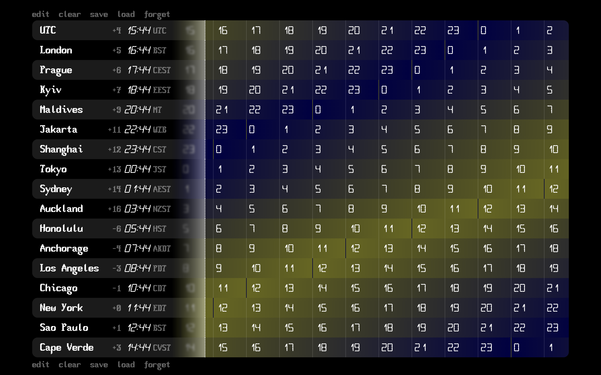
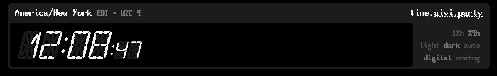

time.aivi.party - a better world clock
I met some people online recently, and they happen to be located in different places around the world. Naturally, people lke us with connections in different countries need a way to quickly and intuitively convert between timezones, so that's what I tried to make with time.aivi.party.

It's a timezone visualizing and conversion tool that can run on- or offline on any device using only data pulled from the browser and the device's settings.
Each timezone gets rendered as a colorful linear clock, showing the hours of the day from left to right. The leftmost, dashed border shows the current time in each zone, and the colors represent whether any timezone is in day or night. Together, this lets you quickly compare timezones visually, and without doing any calculations.
If you have a select group of timezones that you want to keep track of, you can use the memory actions below to do so:
`edit` allows you to reorder and remove displayed timezones.
`clear` visually empties the screen but doesn't erase any memory.
`save` overwrites anything stored in memory with the list on screen.
`load` tries retrieving from memory, displaying the default list if empty.
`forget` destructively deletes the entire saved list from memory.
how time.aivi.party works
On first load, the tool detects your device time, and then dynamically loads a default list of timezones. Afterwards, you can add, edit, or remove them however you wish. It uses localStorage to manage your timezone list, so that on each visit, your selected timezones are automatically loaded.

Each timezone in your list is stored as an IANA timezone identifier, like `America/New_York`, instead of UTC offset, meaning any offsets caused by daylight savings are automatically accounted for, and timezones are automatically named by city or well-known names.
With IANA standards, all clocks are relative to UTC+0 time, however displayed time offsets are based off your device time in order to be more useful at a glance.
Furthermore, a clever little function is able to get timezone abbreviations even from timezones that aren't in JavaScript's native Intl.TimeDateFormatter object. It first uses a small lookup table to account for nonstandard abbreviation spellings, before abbreviating the Long timezone name produced by Intl, rather than the Short, which is occasionally unreliable.
You can add timezones by entering the IANA identifier in the Search box, and inputs are automatically sanitized, validated, and corrected if possible.
All ui and animation for time.aivi.party is entirely hand-coded HTML, JavaScript, and CSS. No AI nor website builders were used.